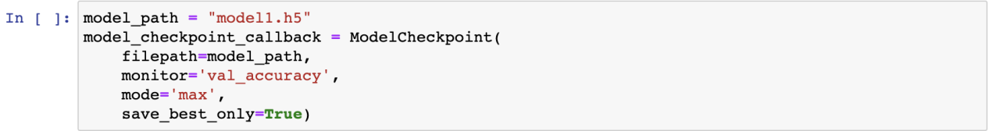

Getting Started
In this blog we are going to learn how to implement different classifiers like VGG16, Linear SVM, EfficientNetB0 and EfficientNetB3 on the given wild animals images which include lions,cheetahs,fox,lion,tiger and wolf. We are going to test the performances and training times of these models.
Dataset
I have used python3 to implement the model.I first downloaded the Wild Animals dataset from kaggle and placed this dataset and placed the zip file in the google drive.Then I have unzipped the data as using the below code snippet:
Libraries
Firstly, before we start working on the dataset, we are going to import required libraries as shown in the below code snippet:

Data Preprocessing
Initializing the Vairiables
The below variables will store the input data, target labels and also the paths of the image files. And the classes data variable is a list that contains the available six classes names.
Creating DataFrames
We will pass the directory path in which the dataset is located to the make_dataframes function. This function will return the train, test, validation dataframes along with the classes and class_count of the dataset using the below code snippet.
Trim Function
We will be using a function called trim which will trim the datafram length from 3618 to 3000 with 6 classes.
Creating Generators
We will be creating the generators for the train, test and validation dataframes using the below code snippet. As we are going to use these generators in the future for training models.
Data Visualization
Using the below code snippet we can visualize the images present in the dataset along with their labels associated with it.
Creating Images and Labels
Now, we are going to create different lists for images and labels using the dataframes that we have created previously using the below function.
HOG(Histograms of Oriented Gradients)
HOG, or Histogram of Oriented Gradients, is a feature descriptor similar to the Scale Invariant and Feature Transform (SIFT) Canny Edge Detector. For the goal of object detection, it is employed in computer vision and image processing. The method counts instances of gradient orientation within a specific area of an image. This technique is extremely similar to Scale Invariant aFeature Transformation and Edge Orientation Histograms (SIFT). And using the below code snippet we can extract HOG.
The training and testing images and labels are extracted using the below code snippet. And also we can see there are 3000 training samples and 776 test samples, where each image size is set to (150,150).
Label Binarizer
A SciKit Learn class called Label Binarizer takes categorical data as input and outputs a Numpy array. It encodes the data into dummy variables that indicate whether or not a specific label is present, unlike Label Encoder.Using the below code snippet we will be encoding the labels of train and test images.
My Contribution
Initially I have choosen the VGG16 model for classication of this dataset.
VGG16
Convolutional neural networks, a subset of artificial neural networks, are also referred to as ConvNets. A convolutional neural network is made up of an input layer, an output layer, and numerous hidden layers. The CNN (Convolutional Neural Network) variation known as VGG16 is one of the best computer vision models available today. This model showed a significant improvement over the state-of-the-art setups by analyzing the networks and enhancing the depth using an architecture with exceptionally small (3 3) convolution filters. With the depth extended to 16–19 weight layers, around 138 trainable parameters
What is VGG16 used for?
VGG16 is an object identification and classification algorithm that, when used to classify 1000 images into 1000 separate categories, has an accuracy rate of 92.7%. It is a popular method for categorizing photographs and is easy to use with transfer learning.
VGG16 Architecture
[4][https://medium.com/@mygreatlearning/everything-you-need-to-know-about-vgg16-7315defb5918]
The 16 in VGG16 stands for 16 weighted layers. Thirteen convolutional layers, five Max Pooling layers, three Dense layers, and a total of 21 layers make up VGG16, but only sixteen of them are weight layers, also known as learnable parameters layers. VGG16 requires an input tensor with three RGB channels and a size of 224, 244. The convolution and max pool layers are positioned continuously throughout the architecture. The Conv-1 Layer consists of 64 filters, the Conv-2 Layer of 128 filters, the Conv-3 Layer of 256 filters, and the Conv-4 and Conv-5 Layers of 512 filters.
Loading the VGG16 model
We are loading the VGG16 using the below code snippet.
Model "CNN1"
We are initializing the hyperparameters like learning rate, epochs, batch_size and losses in the below code snippet:
For the first CNN model, I'm using two convolution blocks to build a model. Additionally, for the classification task of class prediction, we'll use a softmax activation function.

Finally, we need to update our model "m1" to include this output.
And, we would like to save only the best model from all the epochs of this model.
The model is created, the optimizer is built up from scratch, and the model summary is shown. We'll apply the Adam optimizer in this case.
ADAM Optimizer
Instead of stochastic gradient descent, an alternative optimization approach called Adam can be used to train deep learning models. By fusing the most advantageous aspects of the AdaGrad and RMSProp algorithms, Adam develops an optimization technique that can handle sparse gradients in noisy environments. Instead of stochastic gradient descent, an alternative optimization approach called Adam can be used to train deep learning models. By fusing the most advantageous aspects of the AdaGrad and RMSProp algorithms, Adam develops an optimization technique that can handle sparse gradients in noisy environments.
The "CNN1" models architecture is as follows:
Now, using the snippet below, we fit the constructed model. Additionally, I utilized the "d2" data structure, a data structure, to store the training time for this model using the time library:
As we can see from the last 5 epochs of this model, we can say that this “CNN1” model gives us an accuracy of 16.62%.
Using the below code snippet we can visualize the training and validation accuracy and loss for "CNN1".
Model "CNN2"
For the second CNN model, I'm using four convolution blocks to build a model. Additionally, for the classification task of class prediction, we'll use a softmax activation function.
The model "CNN2" Architecture is as follows:

As we can see from the last 5 epochs of this model, we can say that this “CNN2” model gives us an accuracy of 17.65%.
The training and validation accuracy and loss graphs for "CNN2".
Challenge
The main challenge now is that we need to increase the classification models performance significantly as the previous two CNN models performance is pretty much low.
Solution
To overcome this challenge I have then used models like Linear SVM, EfficientNetB0 and EfficientNetB3 models to increase the performance of this problem.
SVM
A popular supervised machine learning approach called "Support Vector machines" is applied to classification and regression issues. For classification issues, a support vector machine's task is to take labelled data like the following:
[3]https://linguisticmaz.medium.com/support-vector-machines-explained-8804cac06883
We can then use this hyperplane to make predictions for which class a new data point belong to:

[3]https://linguisticmaz.medium.com/support-vector-machines-explained-8804cac06883
We'll concentrate on linearly separable support vector machines in this case. The following example shows the distinction between data that can be separated linearly and those that cannot:
[3]https://linguisticmaz.medium.com/support-vector-machines-explained-8804cac06883
Let us consider the below scenario with given hyperplane and lines corresponding to their formulas.

[3]https://linguisticmaz.medium.com/support-vector-machines-explained-8804cac06883
Using the below code we create our Linear SVC model and fit it.
The Accuracy of this Linear SVM model is as follows:
We can see that the Accuracy has been improved to 44% using the Linear SVM Classification model.
EfficientNet
To scale up models in a quick and easy way, EfficientNet use a method called compound coefficient. Compound scaling uniformly scales each dimension with a predetermined fixed set of scaling coefficients as opposed to randomly increasing width, depth, or resolution. The developers of efficient created seven models in different dimensions using the scaling approach and AutoML, outperforming most convolutional neural networks' state-of-the-art accuracy while operating far more effectively.
Compound Model Scaling
The authors thoroughly investigated the effects of each scaling strategy on the functionality and effectiveness of the model before formulating the compound scaling method. They reasoned that while scaling one dimension can assist enhance model performance, scaling all three dimensions—width, depth, and image resolution—while taking into account the varied resources available, can best improve the model's performance as a whole.
[2][https://towardsdatascience.com/complete-architectural-details-of-all-efficientnet-models-5fd5b736142]
We are going to use EfficientNetB0 and EfficientNetB3 for this problem.
EfficientNet-B0
[1][https://medium.com/mlearning-ai/understanding-efficientnet-the-most-powerful-cnn-architecture-eaeb40386fad]
EfficientNet-B3
[1][https://medium.com/mlearning-ai/understanding-efficientnet-the-most-powerful-cnn-architecture-eaeb40386fad]
Model "Efficient_Net_B3"
Using the below code Snippet we are going to create the EfficientNetB3 model.
Next, we need to compile and fit this model now. While compiling this model we are going to set the hyperparameters as following shown in the below code snippet.
As we can see from the last 5 epochs of this model, we can say that this “Efficient_Net_B3” model gives us an accuracy of 83.33%.
The training and validation accuracy and loss graphs for "Efficient_Net_B3".
Model "Efficient_Net_B0"
Using the below code Snippet we are going to create the EfficientNetB0 model.

Next, we need to compile and fit this model now. While compiling this model we are going to set the hyperparameters as following shown in the below code snippet.
As we can see from the last 5 epochs of this model, we can say that this “Efficient_Net_B0” model gives us an accuracy of 83.33%.
The training and validation accuracy and loss graphs for "Efficient_Net_B3".
Graphical Representation using Bar Graphs
Training Time Graphs
Using the below code I have projected the Training times of the implemented models using the bar graph using matplotlib library. And I have stored the Training times of the models using a dictionary data structure and labelled it as “d2”.
The Bar graph for Training times is as follows
Accuracies Graphs:
Using the below code I have projected the accuracies of the implemented models using the bar graph using matplotlib library.I have stored the accuracy of each model using a dictionary data structure and labelled it as "a2".
The Bar graph for Accuracy is as follows
Observations and Results

We have succesfully improved the classification accuracy from 16% to 83% of the wild animals images using different classification models and changing different hyperparameters. From the accuracies and training time graphs,we can say that the model "Efficient_Net_B0" has the highest accuracy with lowest training time. Thus, we can say that using "Efficient_Net_B0" will be used as the solution for our challenge.
References
- [1]Arjun Sarkar : Understanding EfficientNet — The most powerful CNN architecture [https://medium.com/mlearning-ai/understanding-efficientnet-the-most-powerful-cnn-architecture-eaeb40386fad]
- [2]Vardan Agarwal :Complete Architectural Details of all EfficientNet Models [https://towardsdatascience.com/complete-architectural-details-of-all-efficientnet-models-5fd5b736142]
- [3]Mazen Ahmed : Linear Support Vector Machines Explained[https://linguisticmaz.medium.com/support-vector-machines-explained-8804cac06883]
- [4] Rohith G : Everything you need to know about VGG16 [https://medium.com/@mygreatlearning/everything-you-need-to-know-about-vgg16-7315defb5918]